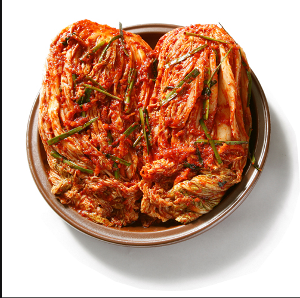
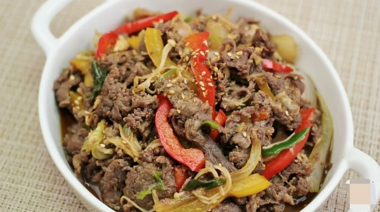

불고기,김치
한국의 전통 음식으로는 대표적으로 불고기와, 김치가 있다. 먼저 불고기는 수천 년 전부터 먹어온 전통 한식으로 조상들의 다양한 지혜가 담긴 바비큐 요리다. 불고기는 얇게 썬 쇠고기를 양념장에 무쳐서 석쇠에 구워 먹는 음식이다. 예전에는 너비아니라고 불렀다. 너비아니란 궁중과 서울의 양반집에서 쓰던 말로 고기를 넓게 저몄다는 뜻이다. 기호에 따라 조금만 익히거나 바싹 구워서 먹는다. 두번째로 김치는 우리나라 전통 발효(醱酵)식품으로 주로 가정에서 만들어 많은 국민들이 주요 부식(副食)으로 먹고 있다. 김치는 지역과 김치 재료의 종류와 특성 및 담그는 방법의 차이에 따라 200여 종 이상이 있다. 김치는 카로틴, 식이섬유(dietary fiber), 페놀성 화합물과 같은 여러 가지 생리활성 물질들이 함유되어 있어서 항산화, 항암, 고혈압 예방 등 여러 가지 기능성을 나타내는 것으로 알려져 있다.
